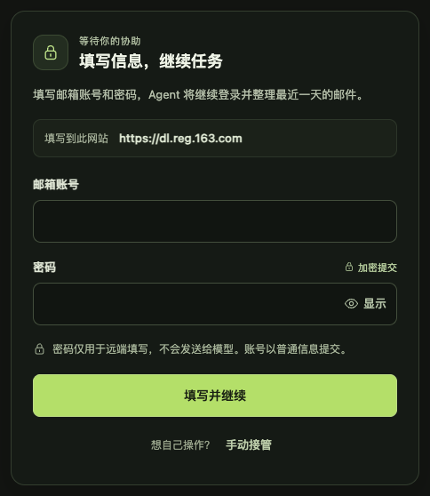

Your own server
SSH connections and tunnels, with a local Web interface.
Personal agent runtime
Describe a task. Your agent uses a browser, works with files, and brings back results from your own Linux server. Watch the remote desktop or take over whenever you need to.

Shipped behavior from the repository README. Planned work is listed separately below.
SSH connections and tunnels, with a local Web interface.
Agent command execution and file read/write, plus a workspace file browser.
Tasks, events, and results persist remotely. Ordinary tasks continue after you close the local page.
Reconnect to the same remote instance and recover task state and events without duplicate submissions.
OpenHands and Chromium, with a visible remote desktop for observation and takeover.
Account names can be passed normally. Passwords are encrypted for the remote executor.
Request takeover for login challenges or blocked steps, then continue the task.
No approval for each step by default. You can pause tasks.
Browser automation primarily uses page elements and CDP. It is not general pixel-based computer use across all Linux desktop applications.
Tasks run asynchronously on your server. When a login, verification challenge, or other obstacle requires your help, the agent asks for input or hands over control.


These are empty demonstration forms, with no real account credentials.

Clone the repo, install locally, then connect over SSH and initialize the remote computer. Full setup, troubleshooting, and requirements live in the README.
git clone https://github.com/BiuBiuHu/OpenBot.git
cd OpenBot
npm ci
npm run build
npm run dev -- --port 3857http://127.0.0.1:3857 and go to Settings.OpenBot has its own Web interface and APIs for other applications. What follows is not shipped yet, or is an explicit boundary.